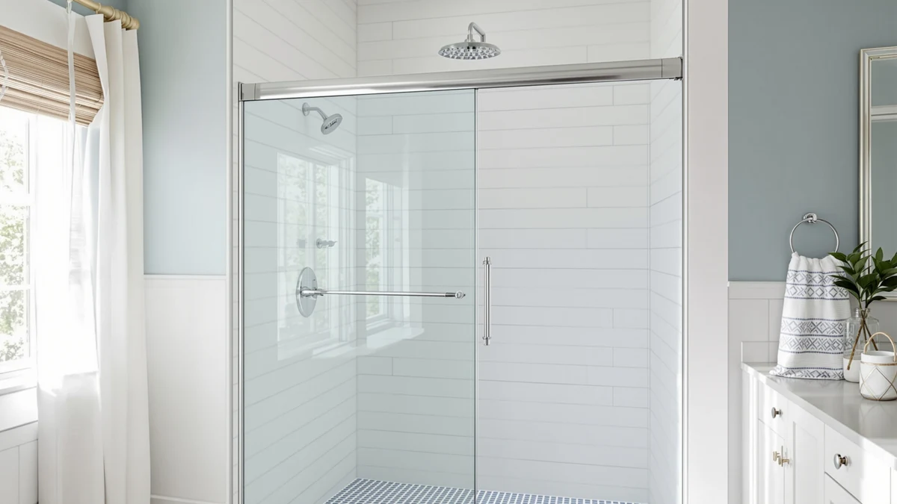

Best Pivot Shower Doors of 2026: 7 Wide-Entry Picks
Prices and picks verified as of August 2026. Independent, reader-supported reviews.


Quick Answer
For most walk-in showers, the Royal Guard 44-48" W x 71" H is the best pivot shower door of 2026: it swings open like a full door for the widest possible entry and covers the width range that fits most standard rough openings. Need a lower price, a narrower opening, or an extra-wide 56 to 60 inch span instead? We found a strong pick for each below.
Our pick: 44-48" W x 71" H — $368.64 Check Price on Amazon
Bottom line: our top pick is the 44-48" W x 71" H Pivot Shower Door at $349.24. The best budget option is the Bathenum 30” x 72” Pivot Shower Door at $206.99.
Things to Know Before You Buy
- Measure the rough opening, not the old door. Pivot doors list an adjustable width range, such as 44 to 48 inches, so measure your actual wall-to-wall opening before ordering rather than matching the door you are replacing.
- Pivot doors swing, they do not slide. That means you need clear floor space in front of the opening for the door to travel through, which matters if a sliding door would fit your bathroom better.
- Reversible hinges matter. Most pivot doors can be installed to swing from either side, so check that before you buy if your layout only leaves room for one swing direction.
- Wider openings need heavier glass. A door spanning 56 to 60 inches carries more glass than a 30 inch door, which is worth knowing since bigger panels are harder to install solo.
- The base or pan is rarely included. Almost every pivot door here is sold as glass and hardware only, so budget separately for the shower pan, curb or tile work underneath it.
The best pivot shower doors swing open like a regular door, giving you the widest possible entry of any shower door style, which matters if you want step-in access without ducking under a track or squeezing through a sliding panel. We compared eight pivot doors sold on Amazon, from a compact 30 inch model to a wide 56 to 60 inch span, looking at width range, price, and what verified buyers report after installing each one.
Pivot doors work differently from the sliding and bypass doors most alcove showers ship with. Instead of rolling along a track, a pivot door mounts on a top and bottom pin and swings open on that single axis, the same way a hinged door does. That gives you a full-width opening to step through, which helps anyone who has trouble ducking or stepping over a low track, and it also means there is no roller hardware to collect soap scum or eventually wear out.
The trade-off is floor space. A pivot door needs room to swing open into the bathroom, so it is not always the right call for a cramped layout. If your opening is generous and you want the most door-like feel in a walk-in shower, the picks below cover widths from 30 inches up to 60 inches, with options at almost every price point.
Why You Should Trust Us
Best Shower Doors is run by Ilane Tall, who covers bathroom fixtures and remodeling for a US audience. We do not run a fake testing lab and we do not invent star ratings. What we do is read the published spec sheets, cross-check each door's adjustable width range and price against manufacturer listings, and dig through verified owner reviews to see what actually holds up once a door is installed. When a pick has a real drawback, we say so instead of glossing over it. Every Amazon link on this page is affiliate-tagged, which supports the site at no cost to you and never changes which pivot shower door we recommend.
How We Picked
We started with pivot shower doors that are in stock and shipping in the US, then narrowed the list to models that cover a genuine range of openings, from a tight 30 inch bathroom to a wide 56 to 60 inch walk-in. Price mattered: pivot doors on this list run from around $200 to more than $500, so we made sure there was a credible option well under $300 alongside the pricier, wider models. We also gave weight to reversible installs, since a door that can swing from either side fits more bathroom layouts than one that only opens one way, and we read through owner feedback for recurring complaints about alignment, hardware or leaks before finalizing the set.
How We Compared
We are upfront about our method: we did not install eight pivot doors in a test bathroom. Instead we compared each door on its published width range, height, price and hardware, and on the patterns that turn up across verified purchase reviews. We looked for consistent signals: whether the pivot hinge holds its swing without sagging over time, whether the width range matches a standard rough opening, and whether owners report leaks or alignment problems after install. Where the same complaint shows up again and again, such as a base not included or glass that needs a careful two-person lift, we note it in that pick's flaws instead of leaving it out.
Our Picks

44-48" W x 71" H
What we like
- Adjustable 44 to 48 inch width range fits most standard walk-in openings without custom ordering
- Reversible hinge lets you set the swing to either side to match your bathroom layout
- Royal Guard prices it below several 44-48 inch competitors on this list, including its own sibling GroGro model
Flaws but not dealbreakers
- At 71 inches tall it sits shorter than some 72 inch competitors, worth checking against your ceiling height and shower pan
- Base and pan are not included, so budget separately for the shower floor
| Material | — |
| Size | Pivot 48" W x 71" H |
The Royal Guard 44-48" W x 71" H is our top pick because it lands in the sweet spot most walk-in showers are actually built around. A 44 to 48 inch adjustable width covers a wide swath of standard rough openings, so you are less likely to special-order glass or fight with a gap on either side. At $368.64 it undercuts several other doors on this list that cover the same width range, including GroGro's version of the same size, without giving up the reversible install that lets you pick which side the door swings from.
Because it is a pivot design, the door swings open on a top and bottom pin rather than rolling on a track, so there is no roller hardware to clog with soap scum or wear out over years of use. That does mean you need clear floor space in front of the opening for the door to travel through. The 44 to 48 inch adjustability is the main draw at this width, since it forgives small measuring errors that would sink a fixed-width door. If your opening falls outside that range, several picks below cover narrower and wider spans.

Bathenum 30” x 72” Pivot
What we like
- Lowest price of any pivot door in this roundup at $206.99
- 30 by 72 inch sizing is a common fit for smaller walk-in and tub-to-shower conversions
- Pivot swing avoids the roller track that collects grime on sliding doors
Flaws but not dealbreakers
- Fixed 30 inch width leaves less room for measuring error than the adjustable-range doors above
- Narrower entry than the wide-swing picks, so it suits a compact layout more than a spacious walk-in
| Material | — |
| Size | 30"x72" Pivot |
The Bathenum 30" x 72" Pivot is the budget entry point on this list, priced at $206.99 while every other pivot door here runs well past $250. That price makes it worth a look for a secondary bathroom, a rental unit, or any project where a pivot door needs to fit without pushing the budget toward the wider, pricier models. At 30 by 72 inches it targets a common opening size, especially in older homes and tub-to-shower conversions where floor space was never generous to begin with.
Because it is sized rather than sold across an adjustable range, measuring your actual rough opening before ordering matters more here than it does with the wider, range-fit doors on this list. At this price point, the comparison is against far pricier pivot doors, and the core function, a solid glass panel that pivots open without a track, doesn't really change with price. If your opening is closer to 44 inches or wider, one of the picks above will fit better than trying to stretch this one.
Pivot Shower Door 38-42" W
What we like
- 38 to 42 inch adjustable width fills the gap between the narrowest and widest picks on this list
- Reversible install matches either a left- or right-hand swing
- Same Royal Guard build as our top pick, sized for a narrower rough opening
Flaws but not dealbreakers
- Priced close to the wider 44-48 inch Royal Guard pick, so measure carefully before choosing the narrower size
- 71 inch height is shorter than several 72 inch-plus competitors here
| Material | — |
| Size | Pivot 42" W x 71" H |
The Pivot Shower Door 38-42" W is Royal Guard's answer for bathrooms whose opening does not quite reach the 44 inch minimum of our top pick but is too wide for the 30 inch Bathenum. At $360.08 it costs nearly as much as the larger 44-48 inch version from the same brand, so this pick only makes sense if your rough opening measures in the high 30s to low 40s rather than being a default choice.
Like the other Royal Guard door on this list, it pivots on a top and bottom pin and installs with a reversible hinge, so it accommodates either swing direction. Getting the range right matters more than saving a few dollars in this width bracket, since a door that is even an inch too narrow will not seal properly against the wall. Measure twice against your actual opening, not the door you are replacing, before ordering.

GroGro 56-60" W x 71"
What we like
- 56 to 60 inch adjustable width is the widest range of any pivot door on this list
- Suits large walk-in showers where a narrower door would leave an awkward gap
- Reversible install fits either side of the opening
Flaws but not dealbreakers
- At $519.90 it is the most expensive pick here by a wide margin
- A panel this wide carries more glass, so plan on a two-person install
| Material | — |
| Size | 56 - 60" W x 71" H |
The GroGro 56-60" W x 71" H exists for one job: covering openings the other seven doors on this list are too narrow for. A 56 to 60 inch adjustable range is unusually wide for a pivot door, most competitors here top out in the mid-40s, which makes this the pick if your walk-in shower was built with a large opening. That width comes at a cost: at $519.90 it is priced well above every other door here, roughly $150 more than the next most expensive pick.
A wider pivot panel means more glass and more weight, so this is not a door to hang solo. Give yourself a helper and time to level and seal it properly, since a wide pivot door is less forgiving of an uneven install than a narrower one. At this width there is no real alternative: sliding doors and narrower pivots simply will not cover a 56 to 60 inch span, so the price comparison that matters is against custom glass rather than against the cheaper doors on this list.

EASYWORC Frameless Pivot Shower Door
What we like
- 26 to 28 inch width fits openings too narrow for every other door on this list
- Frameless design skips the metal channel around the glass, so there is less trim to clean
- Priced at $269.89, closer to the budget end than the mid-width Royal Guard doors
Flaws but not dealbreakers
- The narrow width range limits it to compact bathrooms and will not work for a standard-width opening
- 72 inch height means you should check clearance before ordering
| Material | — |
| Size | 26"-28" W x 72" H |
The EASYWORC Frameless Pivot Shower Door fills a gap none of the wider picks on this list can: a compact 26 to 28 inch opening. That size shows up in small guest bathrooms, powder rooms being converted to a shower, and older homes where the stall was never built to modern standard widths. At $269.89 it is priced in the middle of the pack, more than the 30 inch Bathenum but well under the 38 to 60 inch doors above.
Being frameless, the glass panel is not wrapped in a metal frame, which means one flat surface to wipe down instead of scrubbing water and soap scum out of a track or gasket. That trade-off, like most frameless doors, is that the glass carries more of the structural load, so a clean, level install matters more here than on a framed door. If your opening measures wider than 28 inches, size up to one of the other picks rather than trying to make this one stretch.

ACE DECOR 32-36" x 72"
What we like
- 32 to 36 inch adjustable width bridges the gap between the narrowest and mid-size doors on this list
- 72 inch height matches the taller competitors rather than the shorter 71 inch options
- Reversible hinge for either swing direction
Flaws but not dealbreakers
- At $349.99 it costs more than the wider 38-42 inch Royal Guard pick, so compare width ranges carefully before buying on price alone
- Base and pan are sold separately, as with every door on this list
| Material | — |
| Size | 32-36" x 72" Pivot |
The ACE DECOR 32-36" x 72" sits in a width bracket none of the other seven doors quite cover, between the EASYWORC's 26-28 inch range and the Royal Guard's 38-42 inch door. If your rough opening measures in the low-to-mid 30s, this is the pick built for it rather than one you would have to stretch or shrink to fit. At $349.99 it is priced close to the wider 38-42 inch Royal Guard, so the deciding factor should be your actual measurement, not the sticker price.
At 72 inches tall, it is an inch taller than the 71 inch Royal Guard and GroGro doors on this list, worth checking against your ceiling and existing pan height before ordering. The same pattern holds here as with the other pivot doors on this list: getting the measurement right matters more than anything else in whether the door seals properly once installed. ACE DECOR ships it with a reversible hinge, so the swing direction is not a constraint on which side of the bathroom you can use it.

GroGro 44-48" W x 71"
What we like
- Same 44 to 48 inch adjustable width as our top pick, giving you a second option in that size
- GroGro also makes the wider 56-60 inch door on this list, so hardware style stays consistent if you need both
- Reversible install
Flaws but not dealbreakers
- At $399.90 it costs about $31 more than the Royal Guard door covering the identical width range
- Nothing in the listing distinguishes it from the cheaper 44-48 inch pick beyond brand
| Material | — |
| Size | 44 - 48" W x 71" H |
The GroGro 44-48" W x 71" H covers the exact same 44 to 48 inch width and 71 inch height as our top pick, from a different manufacturer and at a higher price. At $399.90 it runs about $31 more than the Royal Guard door in the same size, so it earns a spot on this list mainly for buyers who already own or prefer GroGro's hardware, perhaps because they are also installing the brand's wider 56-60 inch door elsewhere in the house.
Functionally, the two 44-48 inch doors on this list solve the same problem the same way: a reversible pivot hinge and an adjustable width built to cover the most common walk-in opening size. There is rarely a meaningful difference between competing brands at this size, which is why price and brand consistency, not any standout feature, are the reasons to pick this one over the cheaper Royal Guard equivalent.

Frameless Pivot Shower Door 33-34"
What we like
- 33 to 34 inch width suits compact bathrooms too narrow for the mid-width picks on this list
- Frameless design means one flat glass panel instead of a metal-trimmed frame to clean
- At $251.99 it is the second-lowest price on this list, behind only the 30 inch Bathenum
Flaws but not dealbreakers
- The 33-34 inch range is narrower than the widely available 38 inch and up openings, so measure before assuming it fits
- 72 inch height should be checked against your existing pan and ceiling clearance
| Material | — |
| Size | 34"W×72"H |
The Findepot Frameless Pivot Shower Door 33-34" pairs a narrow, budget-friendly footprint with a frameless look that the pricier doors on this list do not all offer. At $251.99 it undercuts every pick except the 30 inch Bathenum, while still fitting a slightly wider opening. That combination makes it a reasonable choice for a small bathroom where you still want the cleaner, trim-free appearance a frameless door gives you.
Because the width range is tight, 33 to 34 inches leaves little room for a measuring mistake, so confirm your rough opening before ordering rather than assuming it will match a door you are replacing. Choosing a narrow frameless door like this one over a framed alternative usually comes down to the cleaner look and easier wipe-down, accepting that the glass, not a metal frame, is doing the structural work. If your opening runs closer to 40 inches or beyond, one of the mid-width or wide picks above will fit better.
Quick Comparison
| Product | Material | Price | Rating | Best for | Get it |
|---|---|---|---|---|---|
| 44-48" W x 71" H | — | $368.64 | 4 | 44-48 inch openings wanting the widest pivot entry | View on Amazon → |
| Bathenum 30” x 72” Pivot | — | $206.99 | 4 | Compact 30 inch openings on a budget | View on Amazon → |
| Pivot Shower Door 38-42" W | — | $360.08 | 4 | 38-42 inch mid-size openings | View on Amazon → |
| GroGro 56-60" W x 71" | — | $519.90 | 4 | 56-60 inch wide walk-in openings | View on Amazon → |
| EASYWORC Frameless Pivot Shower Door | — | $269.89 | 4 | Narrow 26-28 inch openings | View on Amazon → |
| ACE DECOR 32-36" x 72" | — | $349.99 | 4 | 32-36 inch narrow-to-mid openings | View on Amazon → |
| GroGro 44-48" W x 71" | — | $399.90 | 4 | 44-48 inch openings, GroGro alternative | View on Amazon → |
| Frameless Pivot Shower Door 33-34" | — | $251.99 | 4 | 33-34 inch narrow openings on a budget | View on Amazon → |
The Competition
We looked at several pivot doors that did not make the final eight. A handful of ultra-cheap options under $180 shipped with thinner glass, and reviewers repeatedly described a wobbly feel at the hinge, so we left them off in favor of the Bathenum, which holds a similar price without that complaint. We also passed on a few bi-fold pivot hybrids: they save floor space by folding rather than swinging fully open, but the extra hinges give water more places to find a gap, which works against the simplicity that makes a standard pivot door appealing in the first place.
On the high end, some fully custom pivot enclosures deliver a beautiful, seamless result but require professional measurement and installation that pushes the real cost well beyond the GroGro 56-60 inch door at the top of our price range, so they sit outside a buy-it-online roundup like this one. A few well-reviewed sliding and bypass doors were also strong contenders, but they are not pivot doors, so we kept them in our separate sliding shower door guide instead of mixing door styles here. Across every width and price we compared, the Royal Guard 44-48" W x 71" H remains our verdict for the best pivot shower doors of 2026, and the picks above cover the rest of the range if your opening does not match it.
Frequently Asked Questions
What is the difference between a pivot shower door and a sliding shower door?
A pivot door swings open on a top and bottom pin, the same way a regular door does, and needs floor space in front of the opening to travel through. A sliding door rolls along a track and stays within the width of the opening, which suits a tighter bathroom but relies on rollers that can collect grime over time. If your bathroom has room for the door to swing, a pivot door like the picks above gives you a wider, more door-like entry.
How do I measure for a pivot shower door?
Measure the actual rough opening wall to wall, not the door you are replacing, and take the measurement at a few different heights since older openings are not always perfectly square. Compare that number against each door's adjustable width range, for example the 44 to 48 inch range on our top pick, rather than its single listed size. A door sized even an inch too narrow will not seal properly against the wall.
Do pivot shower doors include the base or pan?
No. Every pivot door on this list is sold as glass and hardware only, so you supply the shower base, pan or tiled curb and the surrounding walls separately. Check your existing pan's dimensions against the door's width range before ordering, since these doors are built to fit an opening rather than to include the floor underneath it.
Can I install a pivot shower door myself?
Many buyers do, but plan for a helper, especially with the wider 56 to 60 inch GroGro door, which carries more glass than the narrower picks. Getting the door plumb and level is the difference between a watertight result and a leak, so give yourself an unhurried afternoon, follow the leveling and sealing steps carefully, and let any silicone cure before running water.